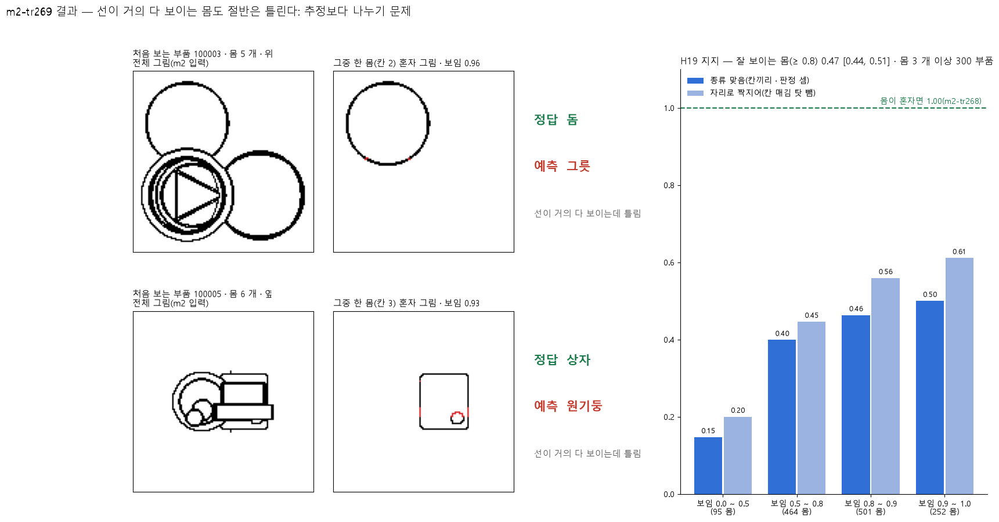

실험 m2_tr0269_h019_가림
목표 G1.2 view 모음 → 파츠별 CAD code(CadQuery · 그 전 「3 면도 → 파츠별 CAD」 · 지금 M2 는 위 · 앞 · 옆 고정 세 장만 받음 → 아무 각도 N 장으로 바꿀 것 · 11-20) · G1 첫 제품 — 피규어 · 메카 사진 여러 장 + 치수 → 숨은선 3 면도 + 파츠별 CAD · G0 임의의 이미지 → CAD 코드 · 빌린 가정 3: 생성기기하 · 정답3D · 정사영 · 갚는 계획: 진단 · 깨끗한 정답 3면도 · 생성기 부품 — 고칠 길은 view 입력 · m1 view · 원화CAD짝 시험지로 다시 봄 · 목표 시험지 값: 안 잼 (!)
처음 보는 부품에서 몸이 셋 이상이면 m2 가 몸 종류를 틀리는 것은 그 몸이 가려져서(그림에 정보가 없음 = 추정 문제)인가, 잘 보이는 몸도 틀리나(나누기 문제)?
판정 · H19 지지(잘 보이는 몸도 0.47 · 혼자면 1.00) — 처음 보는 부품에서 몸이 셋 이상일 때 막히는 것은 추정(가려짐)보다 나누기(섞인 선을 몸별로 가르기) · 가려짐은 덜 보이는 7 % 몸에서 보탬 · 다음: 나누는 방법들을 같은 조건에서 나란히(조사 claudedocs/research_몸나누기_20261121.md 와 함께)
| 가설 | 주장 | 결과 | 근거 |
|---|---|---|---|
| H19 | 몸이 그림에 잘 보여도(선이 거의 다 남아도) 다른 몸 선과 섞이면 m2 는 그 몸을 가르지 못해 틀린다 — 추정이 아니라 나누기 문제 | 지지 | 보임 구간별 칸끼리 · 자리 짝: 0 ~ 0.5(95 몸) 0.15 · 0.20 · 0.5 ~ 0.8(464) 0.40 · 0.45 · 0.8 ~ 0.9(501) 0.46 · 0.56 · 0.9 ~ 1.0(252) 0.50 · 0.61 · 몸이 혼자면 1.00(m2-tr268) · 보임 가운데 0.83 · 가장 큰 몸 보임 가운데 0.89 · 그리기 실패 0 |
분석
한 줄로
물음: 처음 보는 부품에서 몸이 셋 이상이면 m2 가 몸 종류를 틀린다. 그 몸이 가려져 그림에 정보가 없어서인가, 잘 보이는데도 틀리나?
답: 잘 보이는데도 틀린다(H19 지지). 선이 80 % 넘게 보이는 몸의 종류 맞음이 0.47 이다. 같은 몸이 혼자 있으면 1.00 이다. 그림에 정보는 있는데, 다른 몸 선과 섞이면 몸별로 가르지 못한다. 추정보다 나누기 문제다.
왜 이 실험을 했나
m2-tr268 에서 처음 보는 부품은 몸 1 개면 다 맞히고 셋부터 무너졌다. 가장 큰 몸도 0.65 였다. 사용자가 「추정을 못하는 문제라는거지?」 라고 물었다. 나누는 방법들을 시험하기 전에, 정말 나누기 문제인지 가렸다.
바꾼 것 하나
새로 재는 것 하나. 몸마다 그 몸 하나만 부품 틀(부품 가운데 · 가장 긴 변)에 그리고, 그 선이 부품 전체 그림에 얼마나 남았나(보임)를 쟀다. 같은 길로 그린 부품 선이 m2 입력과 화소까지 같은 것을 먼저 확인했다. 망 · 부품 · 출력은 m2-tr268 그대로다(몸 3 개 이상 300 부품 · 몸 1,312).
결과

| 보임(선이 남은 비율) | 몸 | 종류 맞음(칸끼리) | 자리로 짝지어 |
|---|---|---|---|
| 0 ~ 0.5 | 95 | 0.15 | 0.20 |
| 0.5 ~ 0.8 | 464 | 0.40 | 0.45 |
| 0.8 ~ 0.9 | 501 | 0.46 | 0.56 |
| 0.9 ~ 1.0 | 252 | 0.50 | 0.61 |
| 기준: 몸이 혼자(m2-tr268) | 373 | 1.00 |
| 가설 | 결과 | 판정선 | 판정 |
|---|---|---|---|
| H19 잘 보이는 몸(≥ 0.8) 종류 맞음 | 0.47 [0.44, 0.51] | ≤ 0.75 지지 · 아래 ≥ 0.9 기각 | 지지 |
왜 이렇게 나왔나
확인한 것
- 몸 대부분은 잘 보인다(보임 가운데 0.83 · 가장 큰 몸 0.89). 0.5 아래로 가려진 몸은 7 %(95 / 1,312) 뿐이다.
- 그런데 90 % 넘게 보이는 몸도 절반만 맞힌다. 칸 매김 탓을 빼고 자리로 짝지어도 0.61 이다.
- 가려짐은 보탠다. 덜 보이는 몸은 0.15 로 가장 나쁘다. 다만 몫이 작다.
짐작 (아직 확인 안 함)
- m2 는 그림 전체를 한꺼번에 보고 몸 목록을 낸다. 몸들의 선이 붙어 이어지면 「어느 선이 어느 몸 것인지」 를 배운 부품에서만 외우고, 처음 보는 겹침에서는 못 가른다.
한계
- 보임은 선이 남은 비율이다. 다른 몸 선과 겹친 곳도 남은 것으로 세서 보임이 부풀 수 있다.
- 칸끼리 비교라 몸 개수를 틀리면 뒤 칸이 밀린다(자리 짝 셈을 같이 적음).
- 카드의 같이 적음 구간(0.8 ~ 0.95 · 0.95 ~)과 실제로 나눈 구간(0.8 ~ 0.9 · 0.9 ~ 1.0)이 다르다. 판정 셈(≥ 0.8)은 같다.
- 처음 셈에서 부트스트랩에 몸 번호를 잘못 넘겨 구간이 틀렸다(제 실수). 고친 뒤 판정은 같다.
배운 것과 다음
처음 보는 부품에서 막히는 것은 추정이 아니라 나누기다. 그림에 있는 몸을 섞인 선 속에서 가르지 못한다.
- 나누는 방법들을 같은 조건(학습 부품 1.2 만 · 처음 보는 부품 3,000 · 몸 셋 이상 종류 · 개수 맞음)에서 나란히 시험한다.
- 후보는 조사(claudedocs/research_몸나누기_20261121.md)와 함께 고른다: 나눈 뒤 읽기 · 몸별 선 표시 보조 학습 · 하나씩 벗기기 · 그려 보고 맞추기.
실험 기록
- 카드 · 가림269.py(검사 · 흐름 · 그리기 · 재기 · 그림) · 잼.json · 흐름.png · 결과.png · 원본 out/설명/캐드부품/모델269(보임.npz)
정정 (11-21 · m2-tr270 감사)
- 보임은 1 화소 굵힌 합친 그림 선으로 셌다. 그래서 다른 몸 선과 우연히 스친 곳도 남은 것으로 쳐 부풀었다. 몸 자리를 엉뚱하게 옮겨 센 대조가 평균 0.19 였다.
- 같은 화소만 센 보임으로 다시 나누면, 보임 0.8 이상 396 몸의 합친 그림 종류 맞음은 0.56 이다(정답대로 나누면 0.98). 잘 보이는 몸도 틀린다는 결론(나누기 문제)은 그대로다.
- 숨은 전제(11-21 · Lean 시범이 짚음): H19 는 원인을 「추정(가려짐)」 과 「나누기」 둘 중 하나로 놓고 짰다. 카드에 이 전제를 적지 않았다. 셋째 원인(예: 합친 그림의 정규화 · 크기 차)은 이 실험으로 가르지 않았다. m2-tr270 에서 같은 몸을 나눠 주기만 하면 0.88 이 되어, 나누기 쪽 근거는 그 실험이 더 직접적이다.